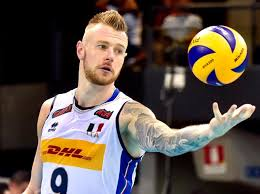

Lo Zar della pallavolo italiana
Ivan Zaytsev miglior opposto dei bianco azzurri

Vita nella pallavolo
Figlio del pallavolista sovietico campione olimpico Vjačeslav Zajcev e della nuotatrice Irina Pozdnjakova, Ivan Zaytsev, soprannominato lo "zar", durante la sua infanzia, per seguire l'attività sportiva del padre, si sposta con la sua famiglia in diverse parti d'Europa. Nel 2001 inizia a giocare, come palleggiatore, nelle giovanili del Perugia Volley, per poi entrare a far parte della prima squadra, in Serie A1, nella stagione 2004-05. Rientra in Italia per il campionato 2016-17, questa volta con la maglia della Sir Safety Perugia, in Serie A1, dove resta per due annate e con cui vince la Supercoppa italiana 2017, la Coppa Italia 2017-18 e lo scudetto 2017-18. Nella stagione 2018-19 si accasa al Modena, sempre nella massima divisione italiana, con cui conquista la Supercoppa italiana 2018.
Link premio Sciocola' D'oro
Curiosità! Se non fosse diventato uno sportivo non avrebbe saputo cosa fare. Intervistato a riguardo ha infatti detto: “non ci ho mai pensato, a dire la verità. A scuola me la cavavo ma non so se avrei continuato. Ero bravo anche perché lo sport era la ricompensa per i bei voti: è la mentalità russa e ringrazio i miei genitori (Vjaceslav, pilastro della Nazionale negli anni ’70 e ’80 e Irina Pozdnyakova, argento agli Europei di nuoto nel 1966) per avermi cresciuto con questa impostazione”.
Squadre e rispettive stagioni
- RPA Perugia 2001/2004
- RPA-LuigiBacchi.it Perugia 2004/2005
- RPA Caffè Maxim Perugia 2005/2006
- M. Roma Volley 2006/2007
- Andreoli Latina 2007/2008
- M. Roma Volley 2008/2012
- Cucine Lube Banca Marche Macerata 2012/2014
- Dinamo Moscow (RUS) 2014/2016
- Sir Safety Conad Perugia 2016/2018
- Azimut Leo Shoes Modena 2018/2019
- Leo Shoes Modena 2019/2020
| RUOLO |
ALTEZZA |
NASCITA |
LUOGO |
| Opposto |
202 cm. |
2/10/1988 |
Spoleto (ITALY) |